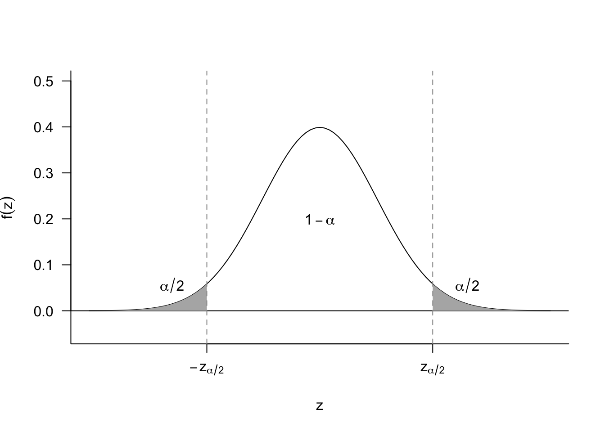
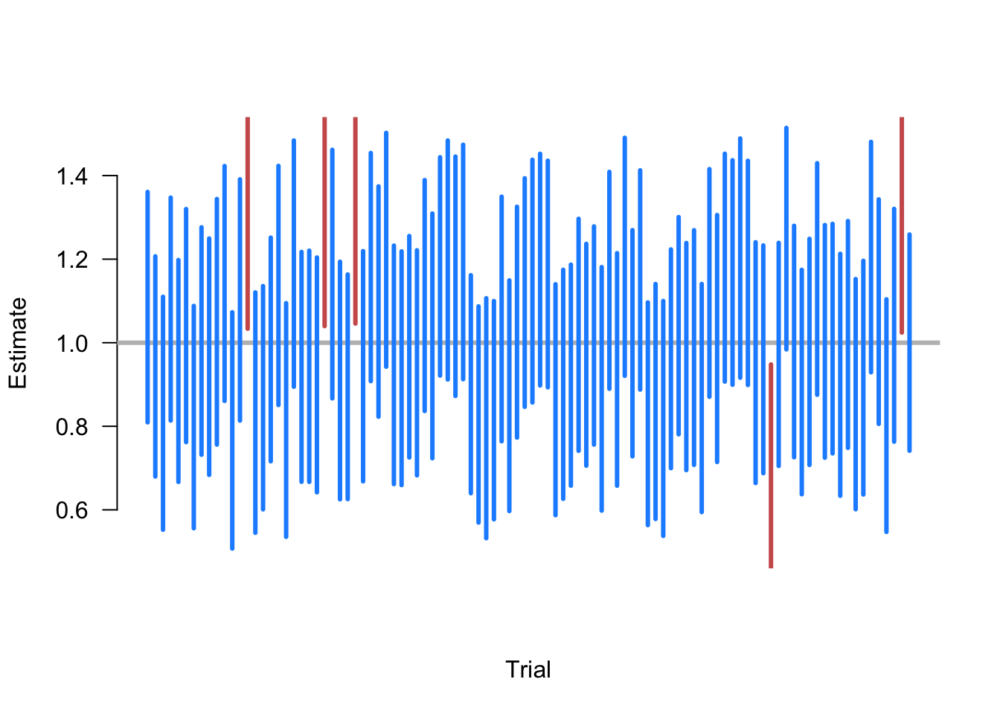

5 Confidence intervals
You have run your experiment and presented your readers with your single best guess about the treatment effect with the difference in sample means. You may have also presented the estimated standard error of this estimate to give readers a sense of how variable the estimate is. You might have even done a hypothesis test against the null of no treatment effect. But none of these approaches answer a fairly compelling question: what range of values of the treatment effect are plausible given the data we observe?
A point estimate typically has 0 probability of being the exact true value, but intuitively we hope that the true value is close to this estimate. Confidence intervals make this kind of intuition more formal by instead estimating ranges of values with a fixed percentage of these ranges containing the true value of the parameter.
We begin with the basic definition of a confidence interval.
Definition 5.1 A \(1-\alpha\) confidence interval for a real-valued parameter \(\theta\) is a pair of statistics \(L= L(X_1, \ldots, X_n)\) and \(U = U(X_1, \ldots, X_n)\) such that \(L < U\) for all values of the sample and such that \[ \P(L \leq \theta \leq U \mid \theta) \geq 1-\alpha, \quad \forall \theta \in \Theta. \]
We say that that a \(1-\alpha\) confidence intervals covers (contains, captures, traps, etc) the true value at least \(100(1-\alpha)\%\) of the time, and we refer to \(1-\alpha\) as the coverage probability or simply coverage. Common confidence intervals include 95% percent (\(\alpha = 0.05\)) and 90% (\(\alpha = 0.1\)).
So a confidence intervals is a random interval that has a particular guarantee about how often it will contain the true value. It’s important to remember what is random and what is fixed in this setup. The interval varies from sample to sample but the true value of the parameter stays fixed, and the coverage is how often we should expect the interval to contain that true value. The “repeating my sample over and over again” analogy can break down very quickly, so it’s sometimes helpful to interpret as giving guarantees across confidence intervals across different experiments. In particular, suppose that a journal publishes 100 quantitative articles per year and each produces a single 95% confidence interval for their quantity of interest. Then, if the confidence intervals are valid, then we should expect 5 of those confidence intervals to not contain their true quantity of interest.
Warning
Let’s say you calculate a 95% confidence interval and it’s \([0.1, 0.4]\). It’s tempting to make a probability statement like \(\P(0.1 \leq \theta \leq 0.4 \mid \theta) = 0.95\) or that there’s a 95% chance that the true parameter is in \([0.1, 0.4]\). But looking at the probability statement, everything on left-hand side of the conditioning bar is fixed, so the probability either has to be 0 (\(\theta\) is outside the interval) or 1 (\(\theta\) is in the interval). The coverage probability of a confidence interval refers to its status as a pair of random variables, \((L, U)\), not any particular realization of those variables like \((0.1, 0.4)\). As an analogy, considering if calculated the sample mean as \(0.25\) and then tried to say that \(0.25\) is unbiased for the population mean. This doesn’t make sense because unbiasedness refers to how the sample mean varies from sample to sample.
In most cases, we will not be able to derive exact confidence intervals, but rather confidence intervals that are asymptotically valid, which means that if we write the interval as a function of the sample size, \((L_n, U_n)\) they would have asymptotic coverage \[ \lim_{n\to\infty} \P(L_n \leq \theta \leq U_n) \leq 1-\alpha \quad\forall\theta\in\Theta. \]
This will usually be the property that we can show for most confidence intervals, since we usually rely on large sample approximations based on the central limit theorem.
5.1 Deriving confidence intervals
If you have taken any statistics before, you probably have seen the standard formula for the 95% confidence interval of the sample mean, \[ \left[\Xbar_n - 1.96\frac{s}{\sqrt{n}},\; \Xbar_n + 1.96\frac{s}{\sqrt{n}}\right], \] where you can recall that \(s\) is the sample standard deviation and \(s/\sqrt{n}\) is the estimate of the standard error of the sample mean. If this is a 95% confidence interval, then the probability that it contains the population mean \(\mu\) should be 0.95, but how can derive this? It turns out that this will be justified by the central limit theorem and we will show the logic for a generic asymptotically normal estimator.
Let’s say that we have an estimator, \(\widehat{\theta}_n\) for the parameter \(\theta\) with estimated standard error \(\widehat{\se}[\widehat{\theta}_n]\). If the estimator is asymptotically normal, then in large samples, we know that \[ \frac{\widehat{\theta}_n - \theta}{\widehat{\se}[\widehat{\theta}_n]} \sim \N(0, 1). \] We can then use our knowledge of the standard normal and the empirical rule to find \[ \P\left( -1.96 \leq \frac{\widehat{\theta}_n - \theta}{\widehat{\se}[\widehat{\theta}_n]} \leq 1.96\right) = 0.95 \] and by multiplying each part of the inequality by \(\widehat{\se}[\widehat{\theta}_n]\), we get \[ \P\left( -1.96\,\widehat{\se}[\widehat{\theta}_n] \leq \widehat{\theta}_n - \theta \leq 1.96\,\widehat{\se}[\widehat{\theta}_n]\right) = 0.95, \] We then subtract all part by the estimator to get \[ \P\left(-\widehat{\theta}_n - 1.96\,\widehat{\se}[\widehat{\theta}_n] \leq - \theta \leq -\widehat{\theta}_n + 1.96\,\widehat{\se}[\widehat{\theta}_n]\right) = 0.95, \] and finally we multiply all parts by \(-1\) (and flipping the inequalities) to arrive at \[ \P\left(\widehat{\theta}_n - 1.96\,\widehat{\se}[\widehat{\theta}_n] \leq \theta \leq \widehat{\theta}_n + 1.96\,\widehat{\se}[\widehat{\theta}_n]\right) = 0.95. \] To connect back to the definition of the confidence interval, we have now shown that the random interval \([L, U]\) where \[ \begin{aligned} L = L(X_1, \ldots, X_n) &= \widehat{\theta}_n - 1.96\,\widehat{\se}[\widehat{\theta}_n] \\ U = U(X_1, \ldots, X_n) &= \widehat{\theta}_n + 1.96\,\widehat{\se}[\widehat{\theta}_n], \end{aligned} \] is an asymptotically valid estimator.1 Replacing \(\Xbar_n\) for \(\widehat{\theta}_n\) and \(s/\sqrt{n}\) for \(\widehat{\se}[\widehat{\theta}_n]\) establishes how the standard 95% confidence interval for the sample mean above asymptotically valid.
How can we generalize this to \(1-\alpha\) confidence intervals? For a standard normal rv, \(Z\), we know that \[ \P(-z_{\alpha/2} \leq Z \leq z_{\alpha/2}) = 1-\alpha \] which implies that we can obtain a \(1-\alpha\) asymptotic confidence intervals by using the interval \([L, U]\), where \[ L = \widehat{\theta}_{n} - z_{\alpha/2} \widehat{\se}[\widehat{\theta}_{n}], \quad U = \widehat{\theta}_{n} + z_{\alpha/2} \widehat{\se}[\widehat{\theta}_{n}]. \] This is sometimes shortened to \(\widehat{\theta}_n \pm z_{\alpha/2} \widehat{\se}[\widehat{\theta}_{n}]\). Remember that we can obtain the values of \(z_{\alpha/2}\) easily from R:
## alpha = 0.1 for 90% CI
qnorm(0.1 / 2, lower.tail = FALSE)[1] 1.644854As a concrete example, then, we could derive a 90% asymptotic confidence interval for the sample mean as \[ \left[\Xbar_{n} - 1.64 \frac{\widehat{\sigma}}{\sqrt{n}}, \Xbar_{n} + 1.64 \frac{\widehat{\sigma}}{\sqrt{n}}\right] \]
5.2 Interpreting confidence intervals
Remember that the interpretation of cofidence is how the random interval performs over repeated samples. A valid 95% confidence interval is a random interval that will contain the true value in 95% of samples. Simulating repeated samples can help to clarify this a bit.
Example 5.1 Suppose that we are taking samples of size \(n=500\) of random variables where \(X_i \sim \N(1, 10)\), and we want to estimate the population mean \(\E[X] = 1\). To do so, we repeat the following steps:
- Draw a sample of \(n=500\) from \(\N(1, 10)\).
- Calculate the 95% confidence interval sample mean \(\Xbar_n \pm 1.96\widehat{\sigma}/\sqrt{n}\).
- Plot the intervals along the x-axis and color them blue if they contain the truth (1) and red if they do not.
Figure 5.2 shows 100 iteraction of these steps. Here we see that, as expected, the large majority of calculated CIs conatain the true value. In fact, exactly 5 of the random samples produce intervals that fail to include 1, which is an exact coverage rate of 95%. Of course, this is just one simulation and a different set of 100 random samples might have produced a slightly different coverage rate. The gauarantee of the 95% confidence intervals is that if we were to continue to take these repeated samples the long-run frequency of intervals covering the truth would approach 0.95.

5.3 Confidence intervals and hypothesis tests
At first glance, we may seem sloppy in using \(\alpha\) in the derivation of a \(1 - \alpha\) confidence interval in this chapter and in an \(\alpha\)-level test in the last chapter. In reality, we were simply foreshadowing the deep connection between the two: every \(1-\alpha\) confidence interval contains all null hypotheses that we would not reject with an \(\alpha\)-level test.
This connection is easiest to see with a asymptotically normal estimator, \(\widehat{\theta}_n\). Consider the hypothesis test of \[ H_0: \theta = \theta_0 \quad \text{vs.}\quad H_1: \theta \neq \theta_0, \] using the test statistic, \[ T = \frac{\widehat{\theta}_{n} - \theta_{0}}{\widehat{\se}[\widehat{\theta}_{n}]}. \] As we discussed in the last chapter, an \(\alpha = 0.05\) test would reject this null when \(|T| > 1.96\), or when \[ |\widehat{\theta}_{n} - \theta_{0}| > 1.96 \widehat{\se}[\widehat{\theta}_{n}]. \] Notice that will be true when \[ \theta_{0} < \widehat{\theta}_{n} - 1.96\widehat{\se}[\widehat{\theta}_{n}]\quad \text{ or }\quad \widehat{\theta}_{n} + \widehat{\se}[\widehat{\theta}_{n}] < \theta_{0} \] or, equivalently, that null hypothesis is outside of the 95% confidence interval, \[\theta_0 \notin \left[\widehat{\theta}_{n} - 1.96\widehat{\se}[\widehat{\theta}_{n}], \widehat{\theta}_{n} + 1.96\widehat{\se}[\widehat{\theta}_{n}]\right].\] Of course, our choice of the null hypothesis was arbitrary, which means that any null hypothesis that is outside the 95% confidence interval would be rejected by a \(\alpha = 0.05\) level test of that null. And any null hypothesis inside the confidence interval is a null hypothesis that we would not reject.
This relationship holds more broadly. Any \(1-\alpha\) confidence interval contains all possible parameter values that would not be rejected as the null hypothesis of an \(\alpha\)-level hypothesis test. This can be really useful for two reasons:
- We can quickly determine if a null hypothesis is rejected at some level by inspecting if it falls in a confidence interval.
- There are situations where determining a confidence interval might be difficult, but performing a hypothesis test is straightforward. Then, we can find the rejection region for the test and determine what null hypotheses would not be rejected at level \(\alpha\) to formulate the \(1-\alpha\) confidence interval. This process is called inverting a test. One important application of this method is for formulating confidence intervals for treatment effects based on randomization inference in the finite population analysis of experiments.
Implicit in this analyis is that the estimate of the standard error is consistent.↩︎